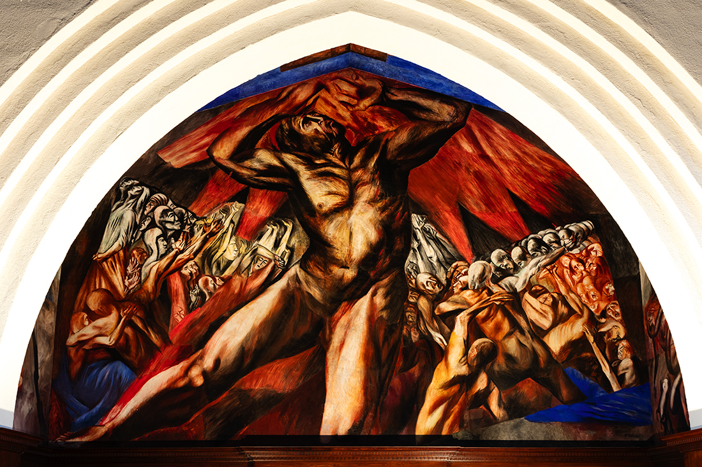
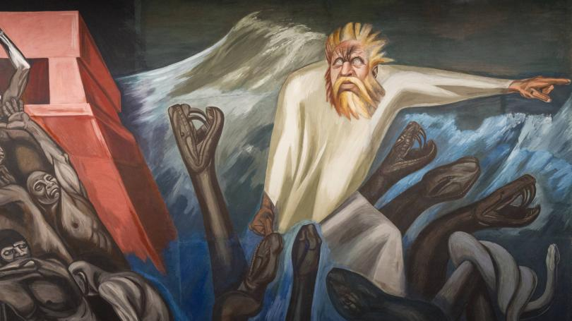
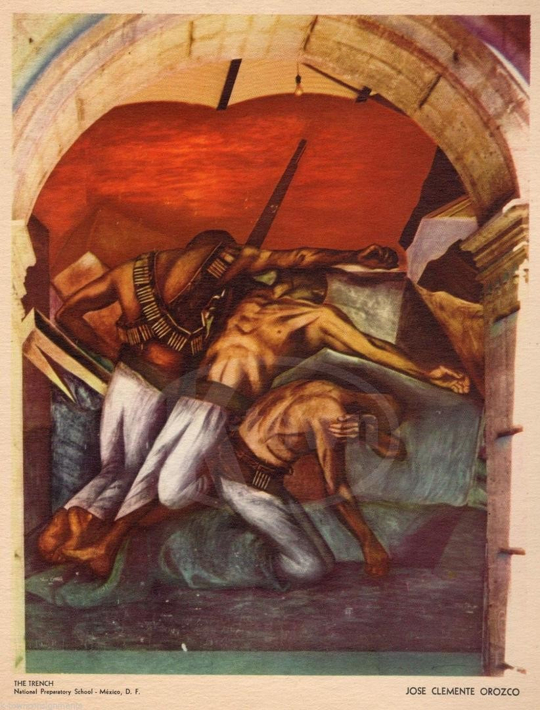

Maternity depicts a mother and child; it resembles Renaissance depictions of Mary and the infant Jesus, with the exception of the conspicuous nudity of the mother.

Prometheus 1930
This piece depicts a monumental Prometheus reaching up to the sky to take fire, a symbol of wisdom and enlightenment, from the ceiling panel that depicts stylized flames, representing God, the source of wisdom. The Titan is about to give mankind the power of knowledge for which Zeus will cruelly punish him, as the Greek myth recounts.

The Epic of American Civilization 1934
This fascinating mural cycle comprised of 24 panels, covering four walls in the Baker Library, is a complex and layered depiction of the history of the American continent. Broken down, it essentially depicts three stages of the Americas: pre-Hispanic times, colonial times marked by the arrival of Europeans, and the modern industrial era.

The Trench 1926
The Trench depicts soldiers fighting in the Mexican Revolution. The three fallen, faceless men form a cross. The sharp diagonal of the composition and the vivid red of the background convey the scene's drama. Due to Orozco's new interest in modern art, with its representations of space and time as mutable and relative, the three men could be interpreted as a single soldier depicted in different moments in time.